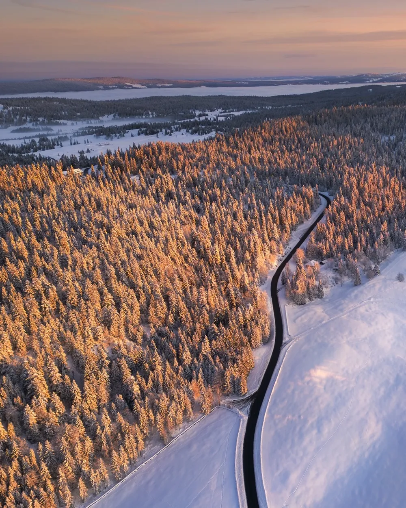

Photo · @jenniferesseivaWINTER WONDERLAND IN THE JURA
A pass in the Jura that turns into a pine-covered snow scene after a good storm. Nothing dramatic. Just perfect.
GPS: 46.564254, 6.239464. It's not a hike, it's a drive-up view. After fresh snow, the whole forest goes white and silent.
Winter only. Go the morning after a storm before the roads get ploughed wide. That's when it still looks untouched. Cloudy or blue sky both work; take whatever you get.